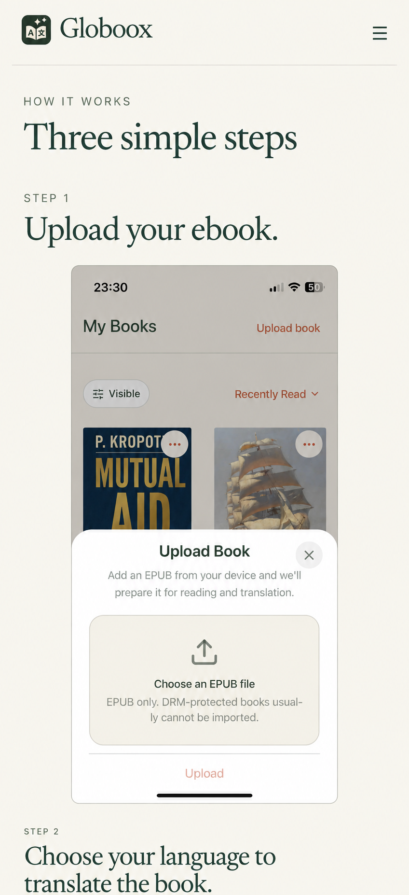
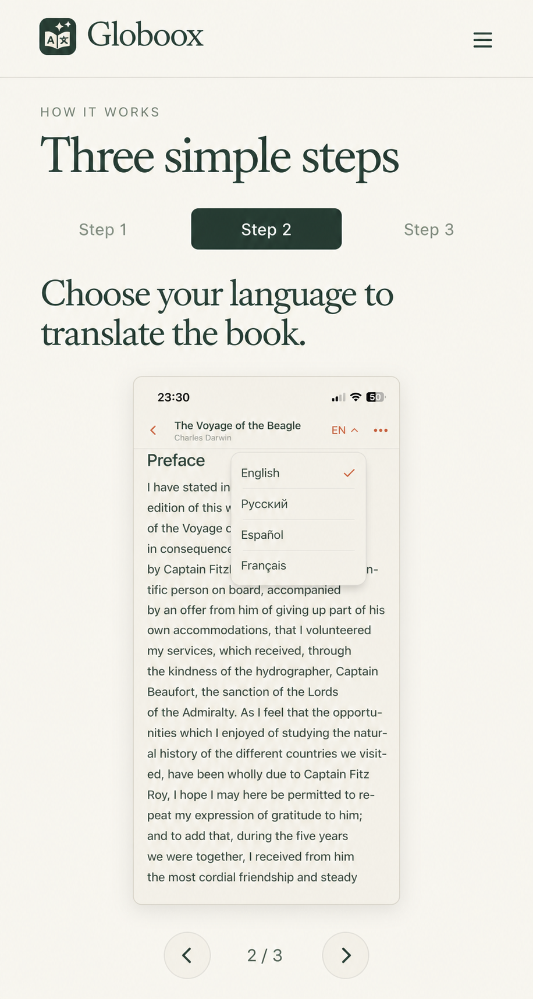
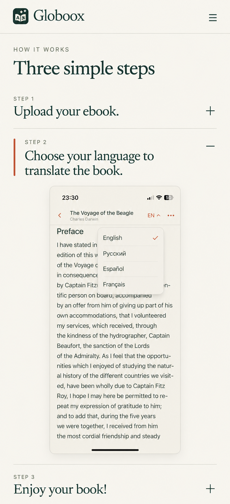

1 · Последовательные главы
Обычный скролл; все три целых экрана открыты. Самый понятный, но длинный вариант.

ImageGen · 10 сентября 2026 · Концепции для выбора; пока не внедрены. Поведение, промпты и ограничения.
Обычный скролл; все три целых экрана открыты. Самый понятный, но длинный вариант.

Тап по шагу, стрелки или горизонтальный свайп; вертикальный скролл свободный. Компактнее, экран меньше.

Одна глава открыта; при выборе другой сохраняем позицию нажатого заголовка. Больше взаимодействий.
